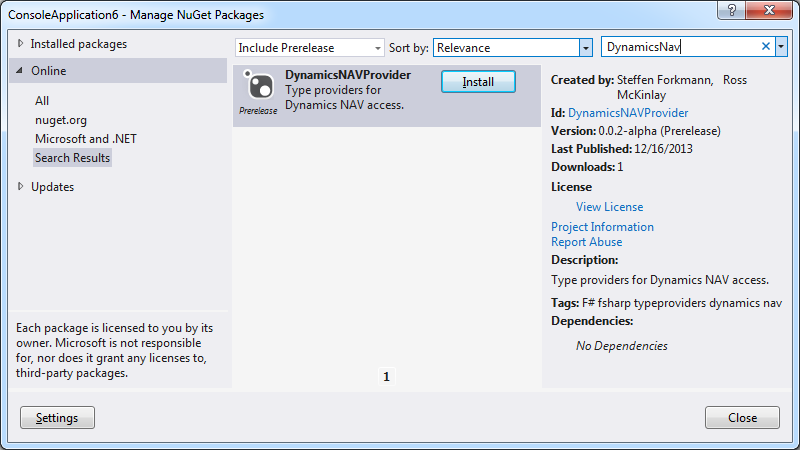

Getting started with the DynamicsNAVProvider
Open Visual Studio 2013 and create a new F# Console application. Right-click on the project and select "Manage NuGet Packages". Make sure the "Include Prerelease" is selected and search for "DynamicsNAVProvider" and press "Install":

You also need to add a reference to "System.Data.dll" to your project.
Now you can go to the "Program.fs" file and start using the type provider:
1: 2: 3: 4: 5: 6: 7: 8: 9: 10: 11: 12: 13: 14: 15: 16: 17: |
open System open System.Linq open FSharp.Data // configure the Dynamics NAV type provider with a connection string to the db type NAV = DynamicsNAV<"Data Source=OMEGA;Initial Catalog=Dev;Integrated Security=True", Company="CRONUS International Ltd."> let db = NAV.GetDataContext() [<EntryPoint>] let main argv = // print all sales headers for sh in db.``Sales Header`` do printfn "%s %s" sh.``Sell-to Customer No.`` sh.``Salesperson Code`` Console.ReadKey() |> ignore 0 // exit code |
Press F5 to run the project.
namespace System
namespace System.Linq
namespace FSharp
namespace FSharp.Data
type NAV = obj
Full name: Gettingstarted.NAV
Full name: Gettingstarted.NAV
type DynamicsNAV
Full name: FSharp.Data.DynamicsNAV
<summary>Typed representation of a database</summary>
<param name='ConnectionString'>The connection string for the sql server</param>
<param name='Company'>The company</param>
<param name='IndividualsAmount'>The amount of sample entities to project into the type system for each sql entity type. Default 1000.</param>
<param name='UseOptionTypes'>If true, F# option types will be used in place of nullable database columns. If false, you will always receive the default value of the column's type even if it is null in the database.</param>
<param name='ResolutionPath'>The location to look for dynamically loaded assemblies containing database vendor specifc connections and custom types.</param>
<param name='Owner'>The owner of the schema for this provider to resolve (Oracle Only)</param>
Full name: FSharp.Data.DynamicsNAV
<summary>Typed representation of a database</summary>
<param name='ConnectionString'>The connection string for the sql server</param>
<param name='Company'>The company</param>
<param name='IndividualsAmount'>The amount of sample entities to project into the type system for each sql entity type. Default 1000.</param>
<param name='UseOptionTypes'>If true, F# option types will be used in place of nullable database columns. If false, you will always receive the default value of the column's type even if it is null in the database.</param>
<param name='ResolutionPath'>The location to look for dynamically loaded assemblies containing database vendor specifc connections and custom types.</param>
<param name='Owner'>The owner of the schema for this provider to resolve (Oracle Only)</param>
val db : obj
Full name: Gettingstarted.db
Full name: Gettingstarted.db
Multiple items
type EntryPointAttribute =
inherit Attribute
new : unit -> EntryPointAttribute
Full name: Microsoft.FSharp.Core.EntryPointAttribute
--------------------
new : unit -> EntryPointAttribute
type EntryPointAttribute =
inherit Attribute
new : unit -> EntryPointAttribute
Full name: Microsoft.FSharp.Core.EntryPointAttribute
--------------------
new : unit -> EntryPointAttribute
val main : argv:string [] -> int
Full name: Gettingstarted.main
Full name: Gettingstarted.main
val argv : string []
val sh : obj
val printfn : format:Printf.TextWriterFormat<'T> -> 'T
Full name: Microsoft.FSharp.Core.ExtraTopLevelOperators.printfn
Full name: Microsoft.FSharp.Core.ExtraTopLevelOperators.printfn
type Console =
static member BackgroundColor : ConsoleColor with get, set
static member Beep : unit -> unit + 1 overload
static member BufferHeight : int with get, set
static member BufferWidth : int with get, set
static member CapsLock : bool
static member Clear : unit -> unit
static member CursorLeft : int with get, set
static member CursorSize : int with get, set
static member CursorTop : int with get, set
static member CursorVisible : bool with get, set
...
Full name: System.Console
static member BackgroundColor : ConsoleColor with get, set
static member Beep : unit -> unit + 1 overload
static member BufferHeight : int with get, set
static member BufferWidth : int with get, set
static member CapsLock : bool
static member Clear : unit -> unit
static member CursorLeft : int with get, set
static member CursorSize : int with get, set
static member CursorTop : int with get, set
static member CursorVisible : bool with get, set
...
Full name: System.Console
Console.ReadKey() : ConsoleKeyInfo
Console.ReadKey(intercept: bool) : ConsoleKeyInfo
Console.ReadKey(intercept: bool) : ConsoleKeyInfo
val ignore : value:'T -> unit
Full name: Microsoft.FSharp.Core.Operators.ignore
Full name: Microsoft.FSharp.Core.Operators.ignore